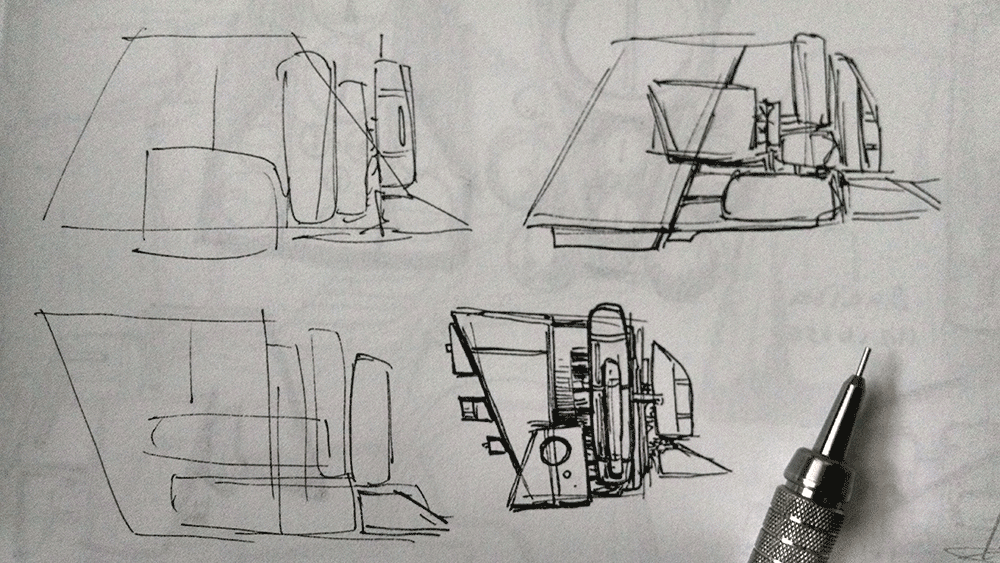

I am an illustrator, comics artist, and web developer living in Chicago, IL.
My ongoing webcomic, Relativity, is about how the most important mission of an astronaut's career affects her marriage and her life.
I can be reached at kramer dot beck at gmail dot com.